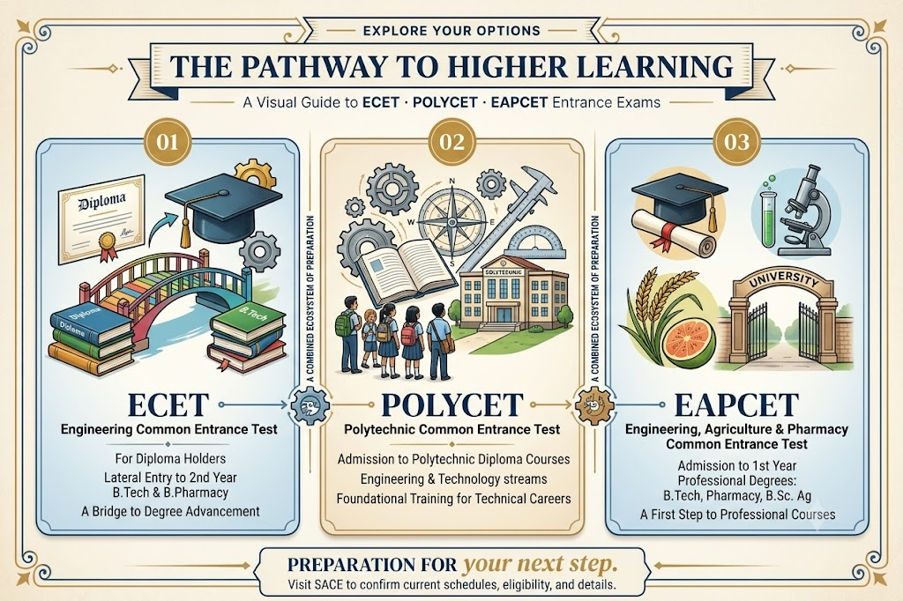
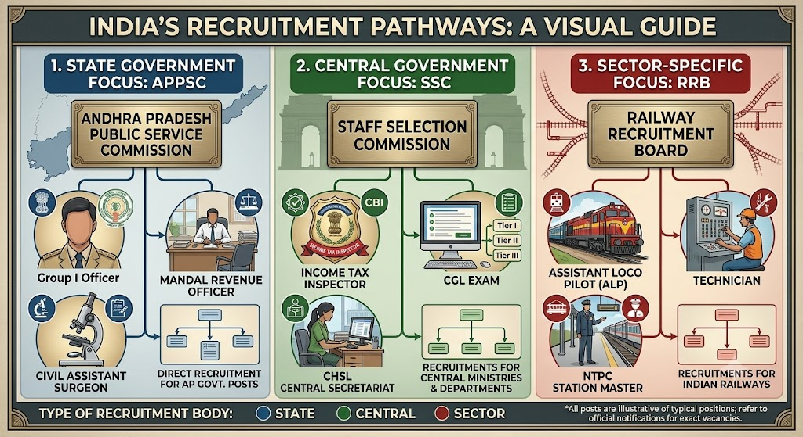
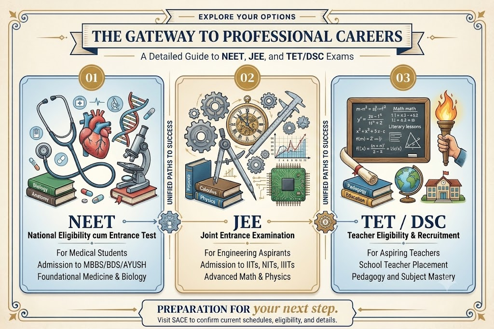

01
01
ENGINEERING EXAMINATIONS
GATE · ESE · PSUs
Learn about engineering exam eligibility, core subjects, exam patterns, postgraduate opportunities and recruitment pathways.
FIND YOUR COURSE PATH
Explore exam preparation and academic programmes. Learn about eligibility, examination patterns, career opportunities and preparation strategies before choosing your next step.
EXPLORE OUR PROGRAMMES
Explore examination options, understand their requirements and find the path that suits your goals. Confirm current batches with SACE.
01
ENGINEERING EXAMINATIONS
Learn about engineering exam eligibility, core subjects, exam patterns, postgraduate opportunities and recruitment pathways.

02STATE ENTRANCE EXAMS
Explore state-level entrance examinations, eligibility, subject requirements, admissions and preparation resources.

03GOVERNMENT RECRUITMENT
Understand recruitment notifications, eligibility, reasoning, quantitative aptitude, general studies and selection stages.
 04
04
BANKING & PUBLIC SECTOR
Explore recruitment requirements and relevant aptitude, reasoning, English, awareness and technical preparation.

05SCHOOL & ENTRANCE
Explore subject preparation, examination requirements, question practice and official resources for entrance and teaching examinations.
 06
06
ACADEMIC SUPPORT
Strengthen subject understanding through guided learning, revision and practice suited to individual academic needs.
YOUR NEXT STEP STARTS HERE
Contact our team to discuss your goals and confirm the programmes currently available at SACE.